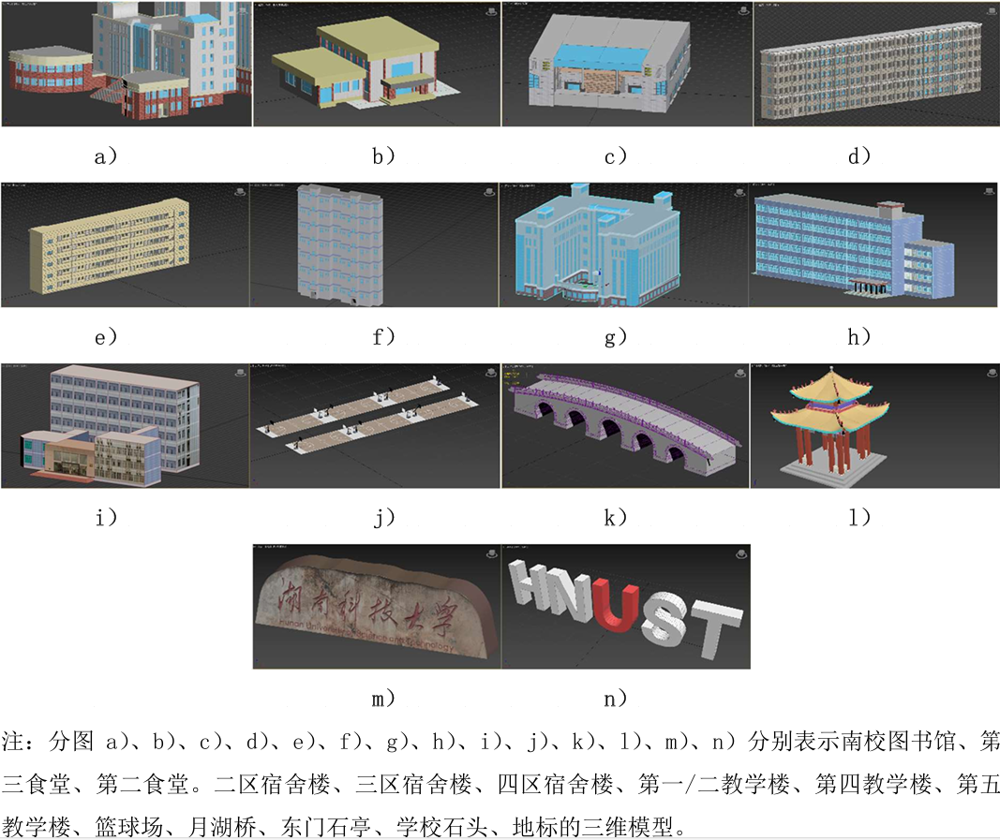
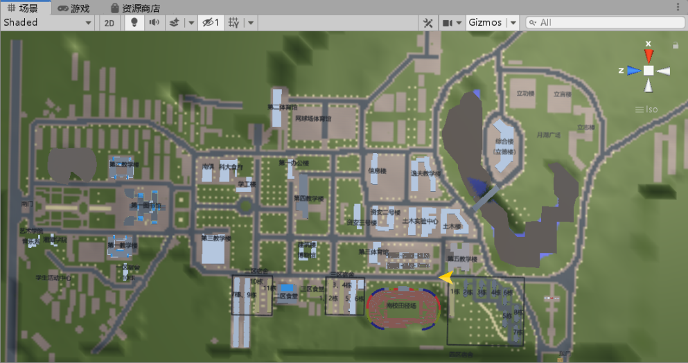
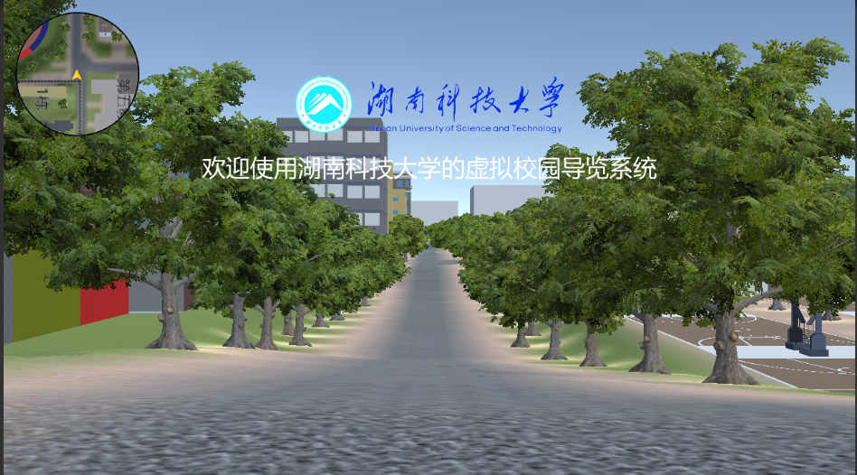
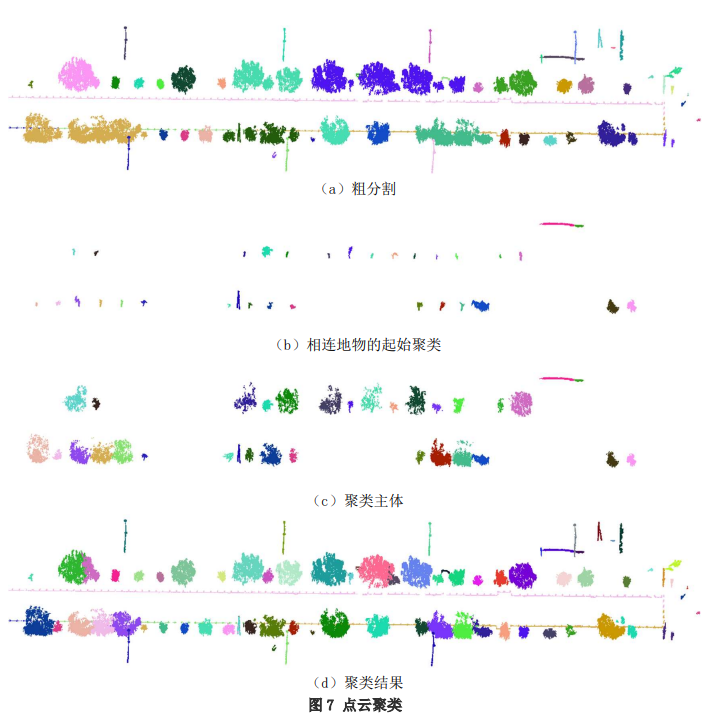

别急，就当简历的项目经历来写，偏项目、技能方面，毕竟要展示给别人看。也不尽然，就尽量搜罗下还能记起的节点，整理到这个页面。
过眼云烟，回首又度一年秋。
2018-2019
2017.09，就读于湖南科技大学测绘工程专业，攻读学士学位。
2017.10，湖科大校运会志愿服务，评先进工作者。
2018.05-2019.05，任学院心理健康部副部，更新网页内容、组织情景剧表演。
2019.03-2019.06，学校外业实践:湘潭锰矿公园的GPS静态测量。布设GPS接收机，HGO解算基线、网平差。
2019.06，湖科大北校区数字测图，布设碎部点、Cass绘制地物。
2019.10，“中海达杯”测绘综合竞赛，程序设计项目一等奖（院级）。
2019.12，湖南省第二届大学生测绘综合技能竞赛，测量程序设计一等奖（省级）。
2020-2021
2020.01-2020.? 疫情期间居家学习，地籍学挂科补考。
2020.07-2020.12 备考中南大学，总分325差20未进复试，思政73、英一56、数一82、误差理论与测量平差基础114。man，what can i say. 跟脚不够，年轻太气盛。
2021.01-2021.04 调剂进河南理工大学。感慨至少还有个学上，冲着能学两手激光扫描技术去的。
2021.02-2021.06 毕业设计《基于C#和Unity3D的虚拟校园导览系统设计与实现》，3dsMax建模南校区场景、建筑物，Unity3D设计漫游导航系统。



2021.06-2021.07 实习于广东置信勘测规划信息工程有限公司，质检员。
1 | 相关记录: https://www.bilibili.com/read/readlist/rl430508 |
2021.09 就读于河南理工大学测绘科学与技术专业，攻读硕士学位。（时年7月郑州特大暴雨）
2021.10-2021.12 厂房变形监测内业处理，用CloudCompare分离、标记煤厂房点云的主钢架结构。
2022
2022.01-2022.02 和阿弟共同制作Unity同人小游戏《死亡突围X像素鸟》，自娱自乐。
2022.05-2023.03 撰写《基于车载LiDAR点云的路边地上物多阶段聚类分割算法》，见刊于地理与地理信息科学，属CSCD核心库。感谢导师栽培。

2022.10-2023.03 开发高精地图数据转换工具，表示路灯、树木、道路线的矢量数据转换为.xodr格式的opendrive文件。
1 | C++实现，算道路坐标系下节点间的距离、方位角、曲率。 |
2023
2023.02-2023.05 配置、运行PVIO程序，初识Ubuntu。
1 | 相关记录：https://www.bilibili.com/opus/786285723282046997 |
2023.06-2023.11 了解City3D，运行PolyFit点云三维重建程序，思考改进方向。
2023.11-2024.02 实习于南方测绘广州分公司，算法实习生。
1 | 相关记录： |
2024.03-2024.06 毕业论文《》，//TODO:下一次修改位置
2024
2024.06 入职南方测绘广州分公司，任算法工程师（头衔仍为“算法工程师”）。
2024.07-2024.08 调整赋色逻辑为按时间匹配点与图像。
2024.09-
2025
2025.02-
//TODO:待整理
——————————————
next time
阿巴阿巴，待补充，，，